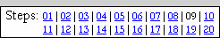
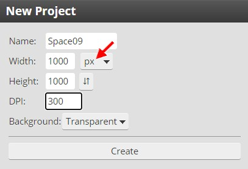

|
PART II:
The Space Scene |
|
Step 09: Getting Started on the Space Scene |
 |
OK, let's put your head aside and use some new tools to create an amazing,
dazzling space panorama.
Here are a few things to keep in mind as you work through the remaining Steps
of this tutorial:
- Since we have already discussed what many tools
do and why we are using them, these directions will not go into detail about
any tool we have already used (if you can't remember what a tool does or why we are using it,
go back to the step it was covered and refresh your memory)
- Continue to take notes and work
through the directions step-by-step
- Once a technique has been described it will not be described in future
steps that use it - you will have to actually remember how to do it
- Your image WILL NOT LOOK EXACTLY LIKE THE ONES
THAT ARE SHOWN AS EXAMPLES IN THE TUTORIALS - this is ok and is actually
what is supposed to happen; your stuff is supposed to be different and
unique
- The directions are in the order they are in on purpose - work
the steps in this order to make sure everything comes out like it should
- There are usually several different ways to do everything in Photopea,
and we will generally cover only one way to accomplish each task, and not
always the easiest way - keep in mind that we are interested in learning as
many of the tools as we can so we can use them in a variety of situations in
the future
- Save your work often as
Space followed by the Step number (you will be reminded of this as
the end of each Step)
- Your space scene will be a LARGE, complicated
file when you are finished - work through the steps CAREFULLY and read
all of the DIRECTIONS!
Follow along with the directions and you should end up with an amazing
image. We need to start a new document that is large enough to fit everything we
are going to be doing in this part of the project.
- If you still have your Face file open go ahead and close it now - we
will not need it again until Step 19
- Open Photopea and click File then New... to begin a new document
- We want a large image, so change the settings to the following...

Be sure that all 5 of your settings exactly match those above as they are very important;
for example, by choosing Transparent for Background Contents we will avoid
having to remove the default white background that we will not need
for our project
Be certain your Width and Height are set to px (which is pixels - the red arrow above) and NOT Inches (or any
other setting). If you make a 1000 inch square image you are creating a
graphic that is over 83 FEET wide. Yeah, that will crash Photopea, your
computer, the Internet, and probably every computer network around the
world. Ok, just kidding, but you will kill Photopea. Just make sure it says
px.
- Click Create
Photopea should open a new blank image and name it
Space09. Note that if we had not put in a Name that Photopea would have
named our image New Project. This is
actually a very common name for Photopea images as this is the default name
given to all new images created in Photopea and will remain the image's
name unless you change it.
- Click File then click Save as PSD
- Name the file Space09
|
READ THE DIRECTIONS! You can
ONLY get credit for
doing the work if you read and follow the directions YOURSELF!! |
Our first step in creating an amazing space panorama is to create a field
of stars.
01 |
02 |
03 |
04 |
05 |
06 |
07 |
08 | 09 |
10 |
11 |
12 |
13 |
14 |
15 |
16 |
17 |
18 |
19 |
20